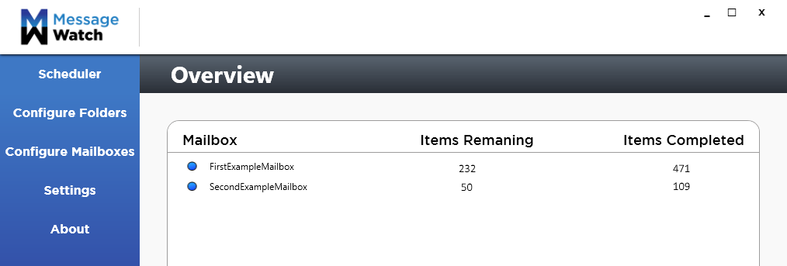
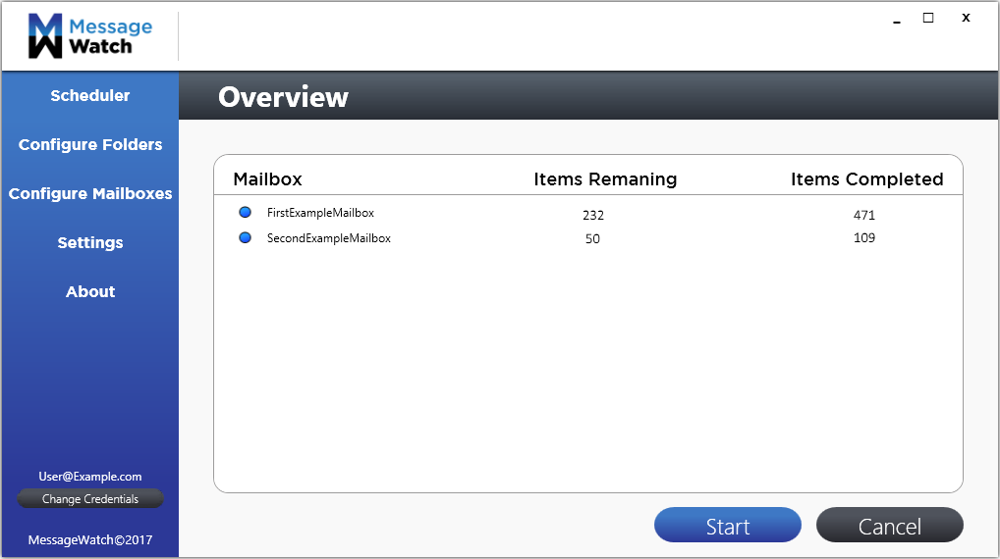

MessageWatch elimates compliance issues, and ensures that all messages are migrated successfully. This makes it a great tool for those in the compliance, messaging, legal/eDiscovery and operations space.
In today's business environment, Compliance and Legal departments can be asked to produce electronic copies of important communications or documents. Every day, your business handles countless messages and files that could contain essential information for business, tax or contractual purposes. Companies are required by law to maintain these communications for a period of time.
Your company is utilizing more than just email to communicate - LinkedIn, Skype for Business, Financial Systems (Reuters, Bloomberg), Slack, etc. – are all utilized for communications and all of which are discoverable and required in court cases if you’re faced with litigation.
If your company utilizes EV and is not handling Failed Messages, your Mail Archiving system is not in full compliance.
MessageWatch scans journal mailboxes for failed messages and re-ingests them into Enterprise Vault to be processed again.
Feugiat posidonium pri ei, sea ea commodo singulis, veri viris consul at ius. An quem illud ludus duo cu.
MessageWatch can be configured to meet your compliance needs. MessageWatch provides you with a wide variety of options to make sure everything is done exactly how you need it. The settings include:
Scheduling allows you to create new scheduled events or delete older ones. MessageWatch can be configured to run on a daily, weekly, or monthly schedule. Creating a new scheduled event is very straightforward and deleting older ones are even easier.
Once you have chosen all your settings, MessageWatch will take care of the rest. MessageWatch scans journal mailboxes for failed messages and re-ingests them into Enterprise Vault to be processed again. Message Watch will run on its set schedule so that there is less impact to the Messaging Team. This frees up valuable resources to work on mission critical issues. More important – processing of Failed Messages makes searches more complete for eDiscovery & legal searches.
